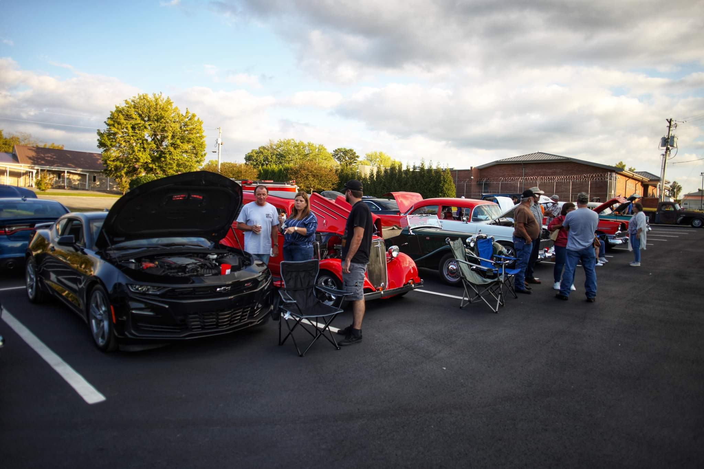
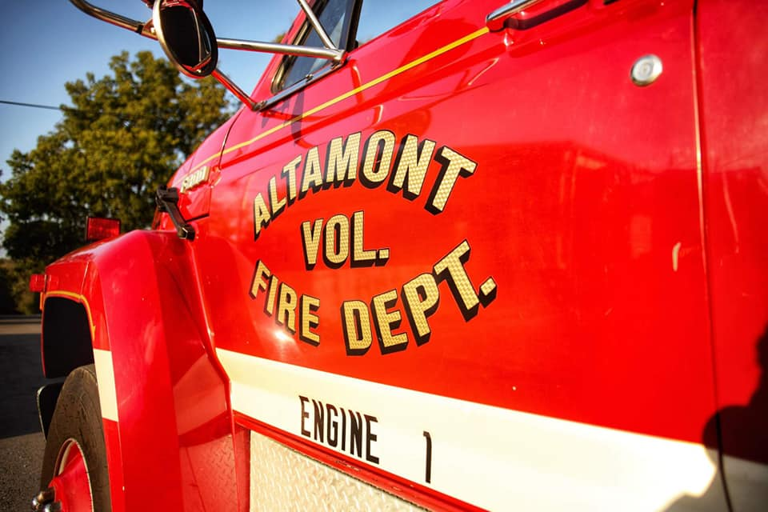
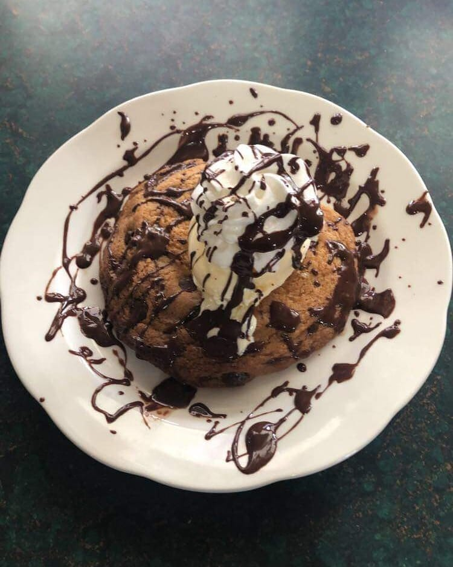
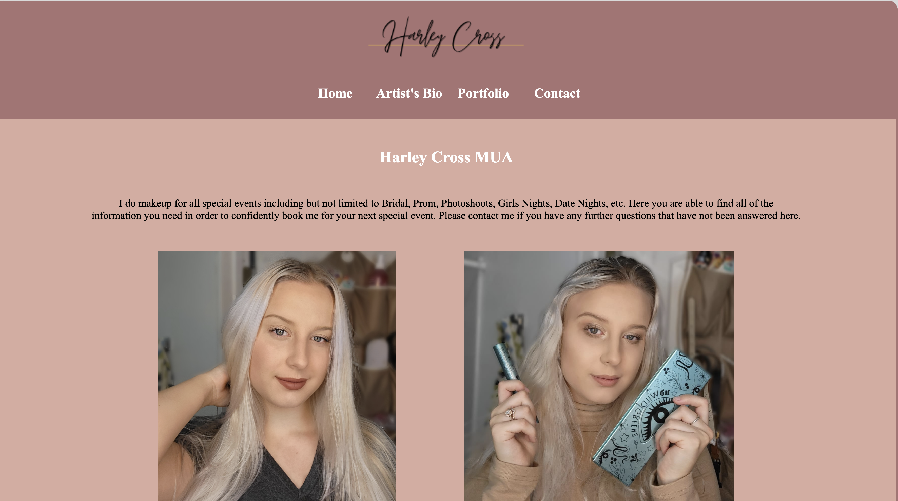
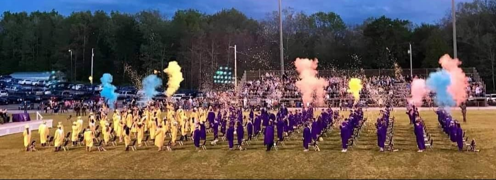

Volunteer Work
Mountain Cruisers Car Club
 Mountain Cruisers is a non-profit organization that raises money for ThanksGiving Baskets that we give to widows throughout the county.
Grundy county is one of the poorest counties in the state of Tennessee and is old fashioned in the way that the male in the house is the main source of income. When the husband, etc. passes away it normally leaves the widow with nothing and prevents her from being able to supply for her family in the way that she wants to especially with age. Our ThanksGiving Baskets contain eveerything needed to host a full spread Thanksgiving Dinner. We raise money for this by hosting cruise-ins and doing raffles.
We also have several car shows per year where we raise money for emergency cases in the county for example we raised over $1,000 for a highschool boy with cancer last year.
Altamont Volunteer Fire & Rescue
 AVFD is the local volunteer fire department for Altamont, TN which is a city inside of Grundy County.
We do everything a paid Fire department does except we are not on shifts at the station. We perform rescues and respond to fire calls, lift assists, LZ's, etc.
Work Experience
Altamont Coffee & Cafe
Position: Waitress and Barista
Dec 2019 - shut down Dec 2020
- Talked and socialized with customers in a way that enhanced their experience.
- Good under pressure
- served groups of 13 plus people alone
- Hosted fundraiser classic car shows at Cafe that boosted the business and raised money for organizations and people in the county.
Forever Young Salon
 Freelance Makeup Artist
May 2019 - Present
- Organized and planned appointment times
- Kept up in high pace stressful situations
Retreat Vacations by Oakstone LLC
Customer service representative
March 2021 - Present
- Calm in stressful situations
- able to calm upset customers and clients
- Problem solving skills
Education
Highschool

Grundy County Highschool
Graduated May of 2021 with
Diploma of Distinction
Focus: Engineering Design
College
Chattanooga state Community College
Degree: Digital Media Production
Concentration in Web Design
August of 2021- Present